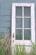
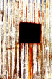
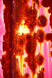

Trenton, Tennessee
|  |
|
 |  |
After a training on children's health benefits for some local parents i drove around Trenton to see what i could see. The courthouse was unusual and beautiful but clear shots were obscured by lots of power lines. There were the usual old white houses coming off the square, but then on a side street i found this empty cotton gin. Off other side streets i found a closed funky shop that apparently used to sell old doors, an old filling station, abandoned doorways, and rusting red railcars.
© Summer, 2001
Amy Jackson